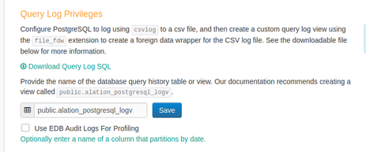
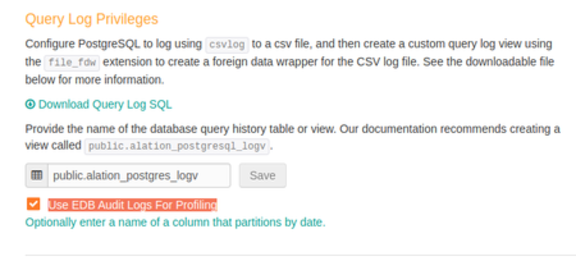

Appendix¶
A.1a SQL Server Extended Events Session Creation¶
Query to create extended events session¶
-- Query to create an extended events session
CREATE EVENT SESSION [alation_query_log] ON SERVER
ADD EVENT sqlserver.sp_statement_completed
(
ACTION
(
package0.collect_system_time,
package0.event_sequence,
sqlos.task_time,
sqlserver.client_app_name,
sqlserver.database_id,
sqlserver.database_name,
sqlserver.nt_username,
sqlserver.server_principal_name,
sqlserver.server_principal_sid,
sqlserver.session_id,
sqlserver.session_nt_username,
sqlserver.transaction_id,
sqlserver.username
)
WHERE
-- Lineage and context queries:
(
(
(
[statement] like '%ALTER %' OR
[statement] like '%CREATE %' OR
[statement] like '%DROP %' OR
[statement] like '%TRUNCATE %' OR
[statement] like '%MERGE %' OR
-- INSERT statements can be of type "SELECT INTO ..." or "INSERT INTO ..."
[statement] like '%SELECT % INTO %' OR
[statement] like '%INSERT INTO % FROM %' OR
[statement] like '%UPDATE %FROM %' OR
[statement] like '%USE %'
)
-- OPTIONALLY CONFIGURE THIS
-- This specifies sampling 1 out of 20 queries that may contribute to table lineage
-- Start with this and if ingestion is successful, try scaling back the sampling
-- by decreasing 20 or comment out the line below to remove sampling altogether
-- Keep in mind that as long as this is sampled some lineage will be missing
AND package0.divides_by_uint64(package0.counter, 20)
-- Uncomment the following lines if you wish to limit sampling to specific databases.
-- Provide appropriate database names instead of placeholder names DB1, DB2, DB3, etc.
-- Or alternatively, use database_id.
-- AND ([sqlserver].[database_name]= N'DB1' OR
-- [sqlserver].[database_name]= N'DB2' OR
-- [sqlserver].[database_name]= N'DB3')
-- Alternatively, you can use database_id.
-- To get the database id, run: SELECT DB_ID ('database name') in SSMS or any query tool.
-- Provide the specific database id’s in place of <integer1-3>:
-- AND ([sqlserver].[database_id] = <integer1> OR
-- [sqlserver].[database_id] = <integer2> OR
-- [sqlserver].[database_id] = <integer3>)
-- Uncomment the following line if you wish to filter out queries by users.
-- This is SQL server username. Provide the appropriate user name instead of the placeholder name user:
-- AND [sqlserver].[username]=N'user'
)
OR
(
-- Includes all SELECT queries
[statement] like '%FROM %'
-- OPTIONALLY CONFIGURE THIS
-- This specifies sampling 1 out of 20 non lineage queries. Start with this and if
-- ingestion is successful try scaling back the sampling by lowering 20 or comment out
-- the line below to remove sampling altogether:
AND package0.divides_by_uint64(package0.counter, 20)
-- Uncomment the following lines if you wish to limit sampling to specific databases.
-- Provide appropriate database names instead of placeholder names DB1, DB2, DB3.
-- Or alternatively, use database_id.
-- AND ([sqlserver].[database_name] = N'DB1' OR
-- [sqlserver].[database_name] = N'DB2' OR
-- [sqlserver].[database_name] = N'DB3' )
-- Uncomment the following lines if you wish to filter out queries by users.
-- This is SQL server username. Provide the appropriate user name instead of the placeholder name user:
-- AND [sqlserver].[username] = N'user'
)
)
),
ADD EVENT sqlserver.sql_statement_completed
(
SET collect_statement=(1)
ACTION
(
package0.collect_system_time,
package0.event_sequence,
sqlos.task_time,
sqlserver.client_app_name,
sqlserver.database_id,
sqlserver.database_name,
sqlserver.nt_username,
sqlserver.server_instance_name,
sqlserver.server_principal_name,
sqlserver.session_id,
sqlserver.session_nt_username,
sqlserver.transaction_id,
sqlserver.username
)
-- Generic Alation filters, we only make use of certain types of statements
-- Note SELECT is omitted because SELECT without FROM is not useful for our analysis
WHERE
-- Lineage and context queries:
(
(
(
[statement] like '%ALTER %' OR
[statement] like '%CREATE %' OR
[statement] like '%DROP %' OR
[statement] like '%TRUNCATE %' OR
[statement] like '%MERGE %' OR
-- INSERT statements can be of the form "SELECT INTO ..." or "INSERT INTO ..."
[statement] like '%SELECT % INTO %' OR
[statement] like '%INSERT INTO % FROM %' OR
[statement] like '%UPDATE % FROM %' OR
[statement] like '%USE %'
)
-- OPTIONALLY CONFIGURE THIS
-- This specifies sampling 1 out of 20 queries that may contribute to table lineage.
-- Start with this and if ingestion is successful try scaling back the sampling by lowering
-- 20 or comment out the below line to remove sampling altogether.
-- Keep in mind that as long as this is sampled some lineage will be missing
AND package0.divides_by_uint64(package0.counter, 20)
-- Uncomment the following lines if you wish to limit sampling to specific databases.
-- Provide appropriate database names instead of placeholder names DB1, DB2, DB3.
-- Or alternatively, use database_id.
-- AND ([sqlserver].[database_name]= N'DB1' OR
-- [sqlserver].[database_name]= N'DB2' OR
-- [sqlserver].[database_name]= N'DB3' )
-- Uncomment the following lines if you wish to filter out queries by users.
-- This is SQL server username. Provide the appropriate user name instead of the placeholder name user:
-- AND [sqlserver].[username]=N'user'
)
OR
(
-- Includes all SELECT queries:
[statement] like '%FROM %'
-- OPTIONALLY CONFIGURE THIS
-- This specifies sampling 1 out of 20 non lineage queries. Start with this and if
-- ingestion is successful try scaling back the sampling by lowering 20 or comment out
-- the line below to remove sampling altogether:
AND package0.divides_by_uint64(package0.counter, 20)
-- Uncomment the following lines if you wish to limit sampling to specific databases.
-- Provide appropriate database names instead of placeholder names DB1, DB2, DB3.
-- Or alternatively, use database_id.
-- AND ([sqlserver].[database_name]= N'DB1' OR
-- [sqlserver].[database_name]= N'DB2' OR
-- [sqlserver].[database_name]= N'DB3' )
-- Uncomment the following lines if you wish to filter out queries by users.
-- This is SQL server username. Provide the appropriate user name instead of the placeholder name user:
-- AND [sqlserver].[username]=N'user'
)
)
)
ADD TARGET package0.event_file
(
-- CONFIGURE THIS:
SET filename=N'C:\Users\Public\Documents\test\alation_query_log.xel',
-- OPTIONALLY CONFIGURE THIS
-- Note: Alation will read one file at a time so this is the size of the file that may be read into memory while it is being fetched.
-- max file size in MB before rolling over:
max_file_size=(100), -- in MB
-- OPTIONALLY CONFIGURE THIS:
max_rollover_files=(100)
)
WITH
(
-- OPTIONALLY CONFIGURE THIS. The total event buffer size:
MAX_MEMORY=50 MB,
-- If buffer is full, events will be dropped instead of blocking the server:
EVENT_RETENTION_MODE=ALLOW_SINGLE_EVENT_LOSS,
-- OPTIONALLY CONFIGURE THIS. Max time before writing events to storage:
MAX_DISPATCH_LATENCY=30 SECONDS,
-- Any events that are too large to fit in the buffer will be dropped:
MAX_EVENT_SIZE=0 KB,
MEMORY_PARTITION_MODE=NONE,
TRACK_CAUSALITY=OFF,
STARTUP_STATE=ON
);
GO
-- Query to start the session (change START -> STOP to stop it)
ALTER EVENT SESSION [alation_query_log] ON SERVER
STATE = START;
GO
Query to Delete and Recreate the Session¶
If you want to recreate the session, you need to first drop the existing session.
Use the following query to delete a session:
DROP EVENT SESSION [alation_query_log] ON SERVER;
GO
-- Check if the session is dropping events and see other data about the session
Using Database ID instead of Database Name¶
If you wish to limit sampling to specific databases, you can either provide database_name or database_id.
To get the database id:
SELECT DB_ID ('database name')
This command can be run in SSMS or any query tool.
Provide the specific database id’s in place of <integer> in the appropriate sections of the query. Comments explain where you can alternatively use database_name or database_id:
AND [sqlserver].[database_id]=<integer>
A.1b SQL Server 2008 Extended Events Session Creation¶
Query To create extended events session SQL Server 2008¶
--Query To Create Extended Events Session
CREATE EVENT SESSION alation_query_log ON SERVER
ADD EVENT sqlserver.sql_statement_completed(
ACTION(
package0.collect_system_time,
sqlos.task_time,
sqlserver.client_app_name,
sqlserver.database_id,
sqlserver.nt_username,
sqlserver.session_id,
sqlserver.session_nt_username,
sqlserver.transaction_id,
sqlserver.username,
sqlserver.sql_text
)
)
ADD
TARGET package0.asynchronous_file_target(
SET filename = N'C:UsersPublicDocumentsalation_query_log.xel',
-- CONFIGURE THIS
-- OPTIONALLY CONFIGURE THIS, max file size in MB before rolling over
-- Note Alation will read one file at a time so this is the size of file that may be
-- read into memory while it is being fetched
max_file_size =(100), -- in MB
max_rollover_files =(100)
)
-- OPTIONALLY CONFIGURE THIS
WITH (
MAX_MEMORY = 50 MB,
-- OPTIONALLY CONFIGURE THIS, the total event buffer size
EVENT_RETENTION_MODE = ALLOW_SINGLE_EVENT_LOSS,
-- If buffer is full events will be dropped instead of blocking the server
MAX_DISPATCH_LATENCY = 30 SECONDS,
-- OPTIONALLY CONFIGURE THIS, max time before writing events to storage
MAX_EVENT_SIZE = 0 KB,
-- Any events that are too large to fit in the buffer will be dropped
MEMORY_PARTITION_MODE = NONE,
TRACK_CAUSALITY = OFF,
STARTUP_STATE = ON
)
GO
-- Query to start the session (change START -> STOP to stop it)
ALTER EVENT SESSION alation_query_log ON SERVER STATE = START
GO
-- If you need to delete and recreate the session this is the syntax to drop it.
DROP EVENT SESSION [alation_query_log] ON SERVER
GO
-- Check if the session is dropping events and see other data about the session
SELECT * FROM sys.dm_xe_sessions;
-- Check if Alation service account can see the log files by running this as the Alation service account
-- Change the path in the example to the location of the log files
EXEC xp_dirtree ‘ C: / path / to / log / files / ’, 0, 1
A.1c SQL Server Trace Script¶
Adjust stoptime, tracefile, maxfilesize, and filecount variables in the script.
//
/* Created by: SQL Server 2012 Profiler */
/* Date: 05/19/2015 00:27:35 AM */
//
-- Create a Queue
declare @rc int
declare @TraceID int
declare @maxfilesize bigint
declare @stoptime datetime
declare @filecount int
declare @tracefile nvarchar(245)
-- maxfilesize is in MB
set @maxfilesize = 1024
-- Set stoptime to NULL to run forever
set @stoptime = '2015-06-19 15:06:00.000'
-- Max number of rotated trace files to keep
set @filecount = 40
-- Please replace the text InsertFileNameHere, with an appropriate
-- filename prefixed by a path, for example, c:MyFolderMyTrace. The .trc extension
-- will be appended to the filename automatically. If you are writing from
-- remote server to local drive, please use UNC path and make sure server has
-- write access to your network share
set @tracefile = N'c:AlationServerTrace1'
exec @rc = sp_trace_create @TraceID output, 2, @tracefile, @maxfilesize, @stoptime, @filecount
if (@rc != 0) goto error
-- Client side File and Table cannot be scripted
-- Set the events required by Alation
declare @on bit
set @on = 1
exec sp_trace_setevent @TraceID, 45, 1, @on
exec sp_trace_setevent @TraceID, 45, 6, @on
exec sp_trace_setevent @TraceID, 45, 10, @on
exec sp_trace_setevent @TraceID, 45, 11, @on
exec sp_trace_setevent @TraceID, 45, 12, @on
exec sp_trace_setevent @TraceID, 45, 13, @on
exec sp_trace_setevent @TraceID, 45, 14, @on
exec sp_trace_setevent @TraceID, 45, 15, @on
exec sp_trace_setevent @TraceID, 45, 16, @on
exec sp_trace_setevent @TraceID, 45, 17, @on
exec sp_trace_setevent @TraceID, 45, 18, @on
exec sp_trace_setevent @TraceID, 45, 35, @on
exec sp_trace_setevent @TraceID, 45, 48, @on
exec sp_trace_setevent @TraceID, 41, 1, @on
exec sp_trace_setevent @TraceID, 41, 6, @on
exec sp_trace_setevent @TraceID, 41, 10, @on
exec sp_trace_setevent @TraceID, 41, 11, @on
exec sp_trace_setevent @TraceID, 41, 12, @on
exec sp_trace_setevent @TraceID, 41, 13, @on
exec sp_trace_setevent @TraceID, 41, 14, @on
exec sp_trace_setevent @TraceID, 41, 15, @on
exec sp_trace_setevent @TraceID, 41, 16, @on
exec sp_trace_setevent @TraceID, 41, 17, @on
exec sp_trace_setevent @TraceID, 41, 18, @on
exec sp_trace_setevent @TraceID, 41, 35, @on
exec sp_trace_setevent @TraceID, 41, 48, @on
-- Set the Filters
declare @intfilter int
declare @bigintfilter bigint
-- Filter out all queries by Trace: ApplicationName NOT LIKE 'SQL Server Profiler%'
exec sp_trace_setfilter @TraceID, 10, 0, 7, N'SQL Server Profiler%'
-- Filter out all queries by SQL Server Mgmt Studio IntelliSense
exec sp_trace_setfilter @TraceID, 10, 0, 7, N'%Transact-SQL
IntelliSense%'
-- Log only user queries: isSystem = 0
exec sp_trace_setfilter @TraceID, 60, 0, 0, 0
-- **
-- TODO: FILTER OUT OTHER UNWANTED QUERIES HERE
-- Filter Queries from a DB
-- NOTE: If your query doesn't explicitly call 'USE DB_NAME' then the DatabaseName
-- column will not be valid.
-- exec sp_trace_setfilter @TraceID, 35, 0, 0, N'MyDatabase'
-- **
-- Set the trace status to start
exec sp_trace_setstatus @TraceID, 1
-- display trace id for future references
select TraceID=@TraceID
goto finish
error:
select ErrorCode=@rc
finish:
go
A.1d SQL Server Ingestion from Custom Table Setup¶
The Alation SQL Server ingestion expects a table with specific columns. They are a subset of the SQL Profiler Data Columns.
The columns listed in both sections below must all be present. Some of the required columns must be present and correctly filled, others can have null values as they are not essential to the ingestion process.
Columns that are required to be filled correctly:
LoginName
SPID
TextData
StartTime
DatabaseName
EndTime (we filter out queries that haven’t finished so this can be faked by making it non null)
Columns that must be present but are not required for ingestion to function:
ApplicationName
Reads
Writes
CPU
RowCounts
NTUserName
EventClass
Duration
Additionally, in the logging process, we usually filter out queries that we know aren’t useful to Alation. You would know best what kind of queries are being logged but if there is a large volume you may need to filter them down before putting them in the table. We suggest the following filters:
TextData like ‘%ALTER %’ OR
TextData like ‘%CREATE %’ OR
TextData like ‘%DROP %’ OR
TextData like ‘%TRUNCATE %’ OR
TextData like ‘%MERGE %’ OR
TextData like ‘%FROM %’ OR
TextData like ‘%USE %’
A.2 Teradata Query Log View SQL¶
Use the following query to create a Query Log view.
Change
my_schema.qrylog_fullto a custom name.It is recommended to create
qrylog_fulltable in a schema owned by Alation DB account.
Note
If you archive queries in PDCR or another schema, change the source schema from DBC to the other schema.
DBC¶
CREATE VIEW MY_SCHEMA.QRYLOG_FULL AS
SELECT
s.ProcID,
s.CollectTimeStamp,
s.QueryID,
UserID,
AcctString,
ExpandAcctString,
SessionID,
LogicalHostID,
RequestNum,
InternalRequestNum,
LogonDateTime,
AcctStringTime,
AcctStringHour,
AcctStringDate,
LogonSource,
AppID,
ClientID,
ClientAddr,
QueryBand,
ProfileID,
StartTime,
FirstStepTime,
FirstRespTime,
LastStateChange,
NumSteps,
NumStepswPar,
MaxStepsInPar,
NumResultRows,
TotalIOCount,
AMPCPUTime,
ParserCPUTime,
UtilityByteCount,
UtilityRowCount,
ErrorCode,
ErrorText,
WarningOnly,
((firstresptime - starttime) hour(4) to second) (Named ElapsedTime),
DelayTime,
AbortFlag,
CacheFlag,
StatementType,
StatementGroup,
sqltextinfo AS QueryText,
NumOfActiveAMPs,
MaxAMPCPUTime,
MaxCPUAmpNumber,
MinAmpCPUTime,
MaxAmpIO,
MaxIOAmpNumber,
MinAmpIO,
SpoolUsage,
WDID,
OpEnvID,
SysConID,
LSN,
NoClassification,
WDOverride,
ResponseTimeMet,
ExceptionValue,
FinalWDID,
TDWMEstMaxRows,
TDWMEstLastRows,
TDWMEstTotalTime,
TDWMAllAmpFlag,
TDWMConfLevelUsed,
TDWMRuleID,
UserName,
DefaultDatabase,
AMPCPUTimeNorm,
ParserCPUTimeNorm,
MaxAMPCPUTimeNorm,
MaxCPUAmpNumberNorm,
MinAmpCPUTimeNorm,
EstResultRows,
EstProcTime,
EstMaxRowCount,
ProxyUser,
ProxyRole,
SessionTemporalQualifier,
CalendarName,
SessionWDID,
DataCollectAlg,
ParserExpReq,
CallNestingLevel,
NumRequestCtx,
KeepFlag,
QueryRedriven,
ReDriveKind,
CPUDecayLevel,
IODecayLevel,
TacticalCPUException,
TacticalIOException,
SeqRespTime,
ReqIOKB,
ReqPhysIO,
ReqPhysIOKB,
r.sqlrowno
FROM dbc.dbqlsqltbl r,
dbc.dbqlogtbl s
WHERE r.queryid = s.queryid and r.procid = s.procid;
Reduced Query Log View¶
CREATE VIEW MY_SCHEMA.query_log_reduced AS
SELECT
s.QueryID,
UserID,
SessionID,
UserName,
AppID,
ClientID,
ClientAddr,
StartTime,
sqltextinfo AS QueryText,
((firstresptime - starttime) hour(4) to second) (Named ElapsedTime),
DelayTime,
DefaultDatabase,
AbortFlag,
NumResultRows,
TotalIOCount,
AMPCPUTime,
ErrorCode,
ErrorText,
RequestNum,
LogonDateTime,
r.sqlrowno
FROM dbc.dbqlsqltbl r,
dbc.dbqlogtbl s
WHERE r.queryid = s.queryid and r.procid = s.procid;
PDCR¶
If PDCR tables are used, change the source schema (pdcr is used in this example) and add the date partition column (logDate is usually the partition column and is used in this example).
CREATE VIEW MY_SCHEMA.QRYLOG_FULL AS
SELECT
s.ProcID,
s.CollectTimeStamp,
s.QueryID,
UserID,
s.logDate,
AcctString,
ExpandAcctString,
SessionID,
LogicalHostID,
RequestNum,
InternalRequestNum,
LogonDateTime,
AcctStringTime,
AcctStringHour,
AcctStringDate,
LogonSource,
AppID,
ClientID,
ClientAddr,
QueryBand,
ProfileID,
StartTime,
FirstStepTime,
FirstRespTime,
LastStateChange,
NumSteps,
NumStepswPar,
MaxStepsInPar,
NumResultRows,
TotalIOCount,
AMPCPUTime,
ParserCPUTime,
UtilityByteCount,
UtilityRowCount,
ErrorCode,
ErrorText,
WarningOnly,
((firstresptime - starttime) hour(4) to second) (Named ElapsedTime),
DelayTime,
AbortFlag,
CacheFlag,
StatementType,
StatementGroup,
sqltextinfo AS QueryText,
NumOfActiveAMPs,
MaxAMPCPUTime,
MaxCPUAmpNumber,
MinAmpCPUTime,
MaxAmpIO,
MaxIOAmpNumber,
MinAmpIO,
SpoolUsage,
WDID,
OpEnvID,
SysConID,
LSN,
NoClassification,
WDOverride,
ResponseTimeMet,
ExceptionValue,
FinalWDID,
TDWMEstMaxRows,
TDWMEstLastRows,
TDWMEstTotalTime,
TDWMAllAmpFlag,
TDWMConfLevelUsed,
TDWMRuleID,
UserName,
DefaultDatabase,
AMPCPUTimeNorm,
ParserCPUTimeNorm,
MaxAMPCPUTimeNorm,
MaxCPUAmpNumberNorm,
MinAmpCPUTimeNorm,
EstResultRows,
EstProcTime,
EstMaxRowCount,
ProxyUser,
ProxyRole,
SessionTemporalQualifier,
CalendarName,
SessionWDID,
DataCollectAlg,
ParserExpReq,
CallNestingLevel,
NumRequestCtx,
KeepFlag,
QueryRedriven,
ReDriveKind,
CPUDecayLevel,
IODecayLevel,
TacticalCPUException,
TacticalIOException,
SeqRespTime,
ReqIOKB,
ReqPhysIO,
ReqPhysIOKB,
r.sqlrowno
FROM pdcr.dbqlsqltbl r,
pdcr.dbqlogtbl s
WHERE r.queryid = s.queryid
AND r.procid = s.procid
AND r.logDate = s.logDate;
If my_schema is not owned by the Alation DB account, provide SELECT
privileges to the Alation DB account on Query Log view by running the
following queries:
GRANT SELECT ON DBC TO MY_SCHEMA WITH GRANT OPTION;
GRANT SELECT ON MY_SCHEMA TO ALATION_DB_USER;
Verify the setup by running the following query asalation_db_user.
SELECT COUNT(*) FROM MY_SCHEMA.QRYLOG_FULL;
Typical query run during extraction by alation_db_user:
SELECT * FROM MY_SCHEMA.QRYLOG_FULL WHERE <...>
A.3 Amazon Redshift Query Log Table¶
Automated daily Query Log Ingestion of Amazon Redshift queries requires an ETL to maintain a rolling Query Log having queries executed in the last 3 days. If Query Log table is small then we recommend maintaining queries for a longer period like the last seven days.
This needs to be a table, not a view, to allow the Alation user to see queries created by other people. If the Alation user queried the view, it would only see its own queries; if a process with full access to everyone’s queries creates and updates a table the Alation user queries, the Alation user can see all the queries in that table.
The following two queries can be used to create a rolling query log. The sample queries use public.alation_qlog as the Query Log table however the table can be named anything and can be placed in any schema as long as Alation DB account has SELECT, INSERT, and DELETE privileges to the table.
Delete queries older than last three days.
DELETE FROM PUBLIC.ALATION_QLOG WHERE START_TIME < (CURRENT_DATE - INTERVAL '3 days');
Append queries executed in the last 24 hours to the Query Log. The following query needs to run as an admin user else the Query Log will not have queries by all users.
(SELECT q.querytxt AS text, q.starttime AS start_time, CASE q.aborted WHEN 0 THEN '' ELSE 'ABORTED' END AS canceled, datediff (millisecond, q.starttime, q.endtime) / 1000.0 AS seconds_taken, s.user_name AS user_name, cast (s.process AS VARCHAR) || '/' || to_char (s.starttime, 'YYYY-MM-DD HH:MI:SS.US') || '/' || s.user_name AS session_id, q.sequence AS seq, trim (s.db_name) AS default_database, trim (label) AS query_filename, q.xid AS transaction_id, q.qtype AS qtype INTO public.alation_qlog FROM ( SELECT * FROM ( SELECT q.userid, q.query, q.label, q.xid, q.pid, DATABASE, qt.text::text AS querytxt, q.starttime, q.endtime, q.aborted, 'QUERY' AS qtype, qt.sequence AS "sequence" FROM stl_query q JOIN stl_querytext qt ON q.query = qt.query AND q.xid = qt.xid AND q.pid = qt.pid ) query_combined UNION ALL SELECT userid, 0 AS query, label, xid, pid, '' AS DATABASE, text::text AS querytxt, starttime, endtime, 0 AS aborted, 'DDL' AS qtype, "sequence" FROM stl_ddltext ) AS q INNER JOIN stl_sessions s ON q.pid = s.process AND q.userid = s.userid WHERE s.user_name != 'rdsdb' AND s.starttime >= (LOCALTIMESTAMP - interval '3 day') );
Alternative SQL (does not automatically create table)¶
INSERT INTO
public.alation_qlog (
SELECT
q.querytxt AS text,
q.starttime AS start_time,
CASE q.aborted WHEN 0 THEN '' ELSE 'ABORTED' END AS canceled,
datediff(millisecond, q.starttime, q.endtime) / 1000.0 AS seconds_taken,
s.user_name AS user_name,
cast(s.process AS VARCHAR) || '/' || to_char
(s.starttime, 'YYYY-MM-DD HH:MI:SS.US') || '/' || s.user_name AS session_id,
q.sequence AS seq,
trim(s.db_name) AS default_database,
trim(label) AS query_filename,
q.xid AS transaction_id,
q.qtype AS qtype
FROM
(
SELECT * FROM
(
SELECT
q.userid,
q.query,
q.label,
q.xid,
q.pid,
DATABASE,
qt.text :: text AS querytxt,
q.starttime,
q.endtime,
q.aborted,
'QUERY' AS qtype,
qt.sequence AS "sequence"
FROM stl_query q
JOIN stl_querytext qt
ON q.query = qt.query
AND q.xid = qt.xid
AND q.pid = qt.pid
) query_combined
UNION ALL
SELECT
userid,
0 AS query,
label,
xid,
pid,
'' AS DATABASE,
text::text AS querytxt,
starttime,
endtime,
0 AS aborted,
'DDL' AS qtype,
"sequence"
FROM stl_ddltext) AS q
INNER JOIN stl_sessions s ON q.pid = s.process
AND q.userid = s.userid
AND q.starttime >= s.starttime
AND q.endtime <= s.endtime
WHERE
s.user_name != 'rdsdb'
AND s.starttime >= (localtimestamp - interval '1 day')
);
A.4 Oracle Query Log View¶
Oracle QLI View using ASH table¶
CREATE
OR REPLACE VIEW <schema>.alation_query_log_view AS
SELECT
r.begin_interval_time,
r.dbid,
r.snap_id,
b.username AS user_name,
b.username ||'/'|| r.session_id ||'/'|| r.session_serial# ||'/'|| r.instance_number AS session_id,
r.instance_number,
r.sql_id,
r.sample_id,
r.service_hash,
r.client_id,
r.machine,
r.port,
s.command_type,
s.sql_text,
r.start_time,
r.cpu_time_ms,
r.time_ms,
r.db_time_ms,
r.time2_ms,
r.read_io_requests,
r.write_io_requests,
r.read_io_bytes,
r.write_io_bytes,
r.interconnect_io_bytes,
r.max_pga_mem,
r.max_temp_space,
r.machine ||':'|| r.port AS client_addr,
0 AS returncode,
0 AS process_id,
NULL AS session_start_time
FROM
(
SELECT
s.begin_interval_time,
a.DBID,
a.snap_id,
a.user_id,
a.session_id,
a.session_serial#,
a.sql_id,
a.sample_id,
a.service_hash,
a.client_id,
a.machine,
a.port,
a.instance_number,
MIN(a.sample_time) AS start_time,
SUM(a.tm_delta_cpu_time) AS cpu_time_ms,
SUM(a.tm_delta_time) AS time_ms,
SUM(a.tm_delta_db_time) AS db_time_ms,
SUM(a.delta_time) AS time2_ms,
SUM(a.delta_read_io_requests) AS read_io_requests,
SUM(a.delta_write_io_requests) AS write_io_requests,
SUM(a.delta_read_io_bytes) AS read_io_bytes,
SUM(a.delta_write_io_bytes) AS write_io_bytes,
SUM(a.delta_interconnect_io_bytes) AS interconnect_io_bytes,
MAX(a.pga_allocated) AS max_pga_mem,
MAX(a.temp_space_allocated) AS max_temp_space
FROM
dba_hist_active_sess_history a
JOIN dba_hist_snapshot s ON a.dbid = s.dbid
AND a.snap_id = s.snap_id
AND a.instance_number = s.instance_number
GROUP BY
a.dbid,
a.snap_id,
a.user_id,
a.session_id,
a.session_serial#,
a.sql_id,
a.sample_id,
a.service_hash,
a.client_id,
a.machine,
a.port,
s.begin_interval_time,
a.instance_number
) r
JOIN dba_users b ON r.user_id = b.user_id
JOIN dba_hist_sqltext s ON r.dbid = s.dbid
AND r.sql_id = s.sql_id
WHERE
s.command_type NOT IN (
6, 7, /* system cmds */
47, /* declare cmd */
170, 189
)
AND b.username NOT IN (
'SYSTEM',
'SYS',
'OLAPSYS',
'LBACSYS',
'OWBSYS',
'OWBSYS_AUDIT',
'APPQOSSYS',
'SYSMAN',
'WMSYS',
'EXFSYS',
'CTXSYS',
'ORDSYS',
'MDSYS'
);
A.5 Vertica Query Log¶
-- SQL to create the query log table that Alation will read from. Drop is only require
-- You can choose any name for the table and any name for ‘alation_app’
-- You will enter these names in the Alation UI to configure Query Ingestion
DROP TABLE IF EXISTS public.alation_qrylog_table;CREATE TABLE public.alation_qrylog_table (
session_id varchar(128),
user_name varchar(128),
start_timestamp timestamptz,
end_timestamp timestamptz,
request_duration_ms int,
request_id int,
request varchar(64000),
canceled varchar(6),
search_path varchar(64000)
);
GRANT SELECT
ON public.alation_qrylog_table TO alation_app;
-- You can use this query to check the current size given to the Requests Issued
-- collector. You may need to increase the size if your query volume is high because
-- the queries may be gone by the time the ETL runs to copy them over to the alation
-- table. The ETL copies the previous days queries over so you need at least enough
-- to store two days worth of queries.
SELECT * FROM V_MONITOR.DATA_COLLECTOR
WHERE
component = 'RequestsIssued';
-- ETL SQL to move queries from Vertica system tables to the Alation query log table.
-- Run this query every day, preferably towards the end of the data in case
-- any queries from the previous day are still running.
-- Alation ingests the day two days behind the current date so as long as the ETL is done
-- by then Alation will not miss any queries.
INSERT INTO
alation_qrylog_table
SELECT * FROM (
SELECT
ri.session_id,
ri.user_name,
qr.start_timestamp,
qr.end_timestamp,
qr.request_duration_ms,
ri.request_id,
ri.request,
CASE WHEN qr.success THEN '' ELSE 'FAILED' END as canceled,
qr.search_path
FROM
v_internal.dc_requests_issued ri
JOIN v_monitor.query_requests qr ON ri.transaction_id = qr.transaction_id
AND ri.request_id = qr.request_id
AND ri.session_id = qr.session_id
WHERE
date(start_timestamp) > CURRENT_DATE - 1
and date(start_timestamp) <= CURRENT_DATE
) AS alation_querylog;
-- Optional ETL to delete rows from the query log table to save space.
-- If Alation auto ingestion is enabled it will continually ingest the queries from this
-- table each day. It may lag a few days behind the current date so it is safe to delete
-- rows older than a week.
DELETE FROM
public.alation_qrylog_table
WHERE
date(start_timestamp) < CURRENT_DATE - 7;
A.6 Netezza Query Log View¶
Netezza supports Query History version 2 and Query History version 3. Alation does not support Query History version 1.
Description |
Query History version 2 |
Query History version 3 |
|---|---|---|
Netezza Release |
IBM® Netezza® release |
In release 7.1, the |
version |
7.0.3 introduces a new version of the history database to support schema in the Netezza database. |
query history configuration version is incremented from 2 to 3. |
The parameters {query_prolog}, {query_epilog}, and {session_prolog} will be
replaced in the query as listed in the following table.
Parameter |
History Version 2 view |
History Version 3 view |
|---|---|---|
|
|
|
|
|
|
|
|
|
Follow the steps as listed to view the query log for Netezza.
Log in to the system database as an admin user.
Create query history load user (optional user):
CREATE USER test_history_load WITH PASSWORD 'password';
Create query history owner user or a mandatory user. If the history load user is not created, it is a load user:
CREATE USER test_history_owner WITH PASSWORD 'password';
Grant Create Database to test_history_owner:
GRANT CREATE DATABASE TO test_history_owner;
Grant List on test_history_load to USER test_history_owner if it is used as load user:
GRANT LIST ON test_history_load TO test_history_owner;
Create a history database:
nzhistcreatedb -d hist -n netezza.alation.internal -t Q -o test_history_owner -p password -u test_history_load -v {version}
Replace the value of
{version}with 2 for History Version 2 and 3 for History Version 3.Create query history configuration based on database. Replace the value of
{configuration name}oftest_hist_v2for History Version 2 and a value oftest_hist_v3for History Version 3.CREATE HISTORY CONFIGURATION {configuration name} HISTTYPE QUERY DATABASE hist USER test_history_owner PASSWORD 'password' COLLECT QUERY LOADINTERVAL 0 LOADMINTHRESHOLD 0 LOADMAXTHRESHOLD 20 STORAGELIMIT 40 LOADRETRY 2 VERSION {version};
Set Query History configuration.
SET HISTORY CONFIGURATION {configuration name}Stop Netezza
nzstop
Start Netezza
nzstart
Log in database
histwithtest_history_ownerCreate a schema and view for Query Log Ingestion (QLI).
CREATE SCHEMA netezza_test_query_log_sch; CREATE VIEW netezza_test_query_log_sch.netezza_test_query_log AS SELECT qp.opid, sp.connecttime, qe.npsid, qe.npsinstanceid, qe.sessionid, qe.resultrows, qe.status, qe.finishtime, qp.userid, qp.username, qp.submittime, qp.querytext, qp.dbname, qp.dbid, qp.schemaid, qp.schemaname, date_part ('epoch', finishtime - submittime) AS runtime_seconds FROM {query_prolog} qp JOIN {query_epilog} qe ON qp.opid = qe.opid AND qp.npsid = qe.npsid AND qp.npsinstanceid = qe.npsinstanceid AND qp.sessionid = qe.sessionid JOIN {session_prolog} sp ON sp.npsid = qe.npsid AND sp.npsinstanceid = qe.npsinstanceid AND sp.sessionid = qe.sessionid AND qp.querytext not in ( 'commit', 'COMMIT', 'begin', 'BEGIN', 'select current_catalog’, ‘current_schema’, ‘current_user', 'select identifier_case’, ‘current_catalog’, ‘current_user', 'select db_encoding', 'select nchar_encoding' ) AND qp.querytext not like 'select version()%' AND qp.querytext not like 'set client_version%' AND qp.querytext not like 'SET CLIENT_VERSION%' AND qp.querytext not like 'set nz_encoding%' AND qp.querytext not like 'set datestyle %' AND qp.querytext not like 'set DateStyle %' AND qp.querytext not like 'SET timezone %' AND qp.querytext not like 'SET TRANSACTION %' AND qp.querytext not like '%JDBC Client Version%';
Result query validation:
SELECT count(*) FROM netezza_test_query_log_sch.netezza_test_query_log;
The validation result should not be zero.
Connect to the system database as an admin and grant permission to <alation_service_account>:
GRANT LIST ON <alation_service_account> TO test_history_owner; GRANT ALTER ON <alation_service_account> TO test_history_owner;
Connect to
histdatabase usingtest_history_owneruser and give permission to <alation_service_account> to runhist.netezza_test_query_log_sch.netezza_test_query_logview:GRANT SELECT ON hist.netezza_test_query_log_sch.netezza_test_query_log TO <alation_service_account>;
Connect to system database using extraction user
<alation_service_account>:SELECT COUNT(*) FROM hist.netezza_test_query_log_sch.netezza_test_query_log;
Verify results. The validation result should not be zero.
How do you capture history for a particular database?¶
ALTER DATABASE <db_name> COLLECT HISTORY {ON DEFAULT}
Field |
Description of value |
|---|---|
COLLECT HISTORY |
Creation of a database: Collection of history for session attached to the database. If the value is set to ON, history is collected only if the user is a member of at least one group. The COLLECT HISTORY is set to ON and is the default value. If the value is set to OFF, history is not collected for the database. If the value is set to DEFAULT, history is collected for the database only if the user is a member of at least one group. The COLLECT HISTORY is set to ON and one of the following criteria apply:
|
How do you capture history for a particular user group <group_name> ?¶
ALTER GROUP <group_name> WITH COLLECT HISTORY {ONDEFAULT}
How to add a particular user <user_name> to group <group_name> for which COLLECT HISTORY is ON or DEFAULT?¶
ALTER GROUP <group_name> ADD <user_name>
Field |
Description of value |
|---|---|
COLLECT HISTORY |
If the system should collect history of data for the session of a user who is a member of the group: If the value is set to ON, history is collected only if the user is connected to a database and the COLLECT HISTORY is set to ON. If the value is set to OFF, history is not collected for the database. If the value is set to DEFAULT, history is collected for the user only if the user is connected to a database and the COLLECT HISTORY is set to ON and one of the following criteria apply:
|
A.7 Postgres QLI Setup¶
CSV Logging with No Log Rotation¶
First you need to change the server configuration (postgresql.conf) and enable CSV logging as described in detail here and reload.
# set in postgresql.conf + restart/reload server (changing logging_collector needs a restart) log_destination ='csvlog' log_directory = 'pg_log' logging_collector = on log_filename = 'postgresql' log_min_duration_statement = 0 log_error_verbosity = verbose # terse, default, or verbose messages log_hostname = on log_statement = 'all' # none, ddl, mod, all log_rotation_age = 0 log_rotation_size = 0 log_min_error_statement = infoReload the updated postgressql.conf as follows:
SELECT pg_reload_conf();Note
log_rotation_age = 0andlog_rotation_size = 0to stop rotation and all logs will be written to the same file, that is to the same table. The difference between setting this option and settinglog_min_duration_statementto zero is that exceedinglog_min_duration_statementforces the text of the query to be logged, butlog_durationdoesn’t.
Install the
file_fdwextension (contribpackage needed) and create a foreign file server and a foreign table, linking to our above configured log file name.CREATE EXTENSION file_fdw; CREATE SERVER pglog FOREIGN DATA WRAPPER file_fdw; CREATE FOREIGN TABLE public.postgres_log ( log_time timestamp(3) with time zone, user_name text, database_name text, process_id integer, connection_from text, session_id text, session_line_num bigint, command_tag text, session_start_time timestamp with time zone, virtual_transaction_id text, transaction_id bigint, error_severity text, sql_state_code text, message text, detail text, hint text, internal_query text, internal_query_pos integer, context text, query text, query_pos integer, location text, application_name text, backend_type text, empty_column text, column_with_zeroes text ) SERVER pglog OPTIONS (filename 'pg_log/postgresql.csv', format 'csv');
CREATE EXTENSION file_fdw; CREATE SERVER pglog FOREIGN DATA WRAPPER file_fdw; CREATE FOREIGN TABLE public.postgres_log ( log_time timestamp(3) with time zone, user_name text, database_name text, process_id integer, connection_from text, session_id text, session_line_num bigint, command_tag text, session_start_time timestamp with time zone, virtual_transaction_id text, transaction_id bigint, error_severity text, sql_state_code text, message text, detail text, hint text, internal_query text, internal_query_pos integer, context text, query text, query_pos integer, location text, application_name text, backend_type text ) SERVER pglog OPTIONS (filename 'pg_log/postgresql.csv', format 'csv');
Create a View
Create view public.alation_postgres_logv as SELECT session_id, user_name, session_line_num, session_start_time, process_id, connection_from, transaction_id, command_tag, message, log_time, sql_state_code, error_severity, location, query, database_name, application_name FROM postgres_log;
Grant access to Alation Service Account:
Grant SELECT on public.alation_postgres_logv to {Alation Service Account}
Update General Settings in Alation UI¶
Enter the view name public.alation_postgres_logv in the Query Log Privileges entry box.
Leave Use EDB Audit Logs for Profiling checkbox unselected.
{kind=link}
CSV Logging with Log rotation¶
A handy way to expose and physically keep around (automatic truncation) only seven days of logs is to define seven child tables for a master one. Process would then look something like this:
set in postgresql.conf + reload conf
log_destination = 'csvlog' log_filename = 'postgresql-%a' # Keep 7d of logs in files 'postgresql-Mon.csv' etc. log_directory ='pg_log' logging_collector = on log_min_duration_statement = 0 log_error_verbosity = verbose # terse, default, or verbose messages log_hostname = on log_statement = 'all' # none, ddl, mod, all log_truncate_on_rotation = on log_rotation_age = 1440 log_rotation_size = 0 log_min_error_statement = infoNote
To keep seven days of logs, one log file per day named
postgresql-Mon,postgresql-Tue, etc. and automatically overwrite last week’s log with this week’s log, setlog_filenametopostgresql-%a,log_truncate_on_rotationtoon, andlog_rotation_ageto1440.The difference between setting this option and setting
log_min_duration_statementto zero is that exceedinglog_min_duration_statementforces the text of the query to be logged, butlog_durationdoesn’t.
Install the
file_fdwextension (contribpackage needed) and create a foreign file server and a foreign table, linking to our above configured log file name.
CREATE EXTENSION file_fdw; CREATE SERVER pglog FOREIGN DATA WRAPPER file_fdw; CREATE TABLE public.postgres_log ( log_time timestamp(3) with time zone, user_name text, database_name text, process_id integer, connection_from text, session_id text, session_line_num bigint, command_tag text, session_start_time timestamp with time zone, virtual_transaction_id text, transaction_id bigint, error_severity text, sql_state_code text, message text, detail text, hint text, internal_query text, internal_query_pos integer, context text, query text, query_pos integer, location text, application_name text );CREATE FOREIGN TABLE public.postgres_log_mon ( log_time timestamp(3) with time zone, user_name text, database_name text, process_id integer, connection_from text, session_id text, session_line_num bigint, command_tag text, session_start_time timestamp with time zone, virtual_transaction_id text, transaction_id bigint, error_severity text, sql_state_code text, message text, detail text, hint text, internal_query text, internal_query_pos integer, context text, query text, query_pos integer, location text, application_name text ) SERVER pglog OPTIONS (filename 'pg_log/postgresql-Mon.csv', format 'csv'); ALTER TABLE public.postgres_log_mon INHERIT public.postgres_log;
Repeat for Tue…Sun
Create a View
Create view public.alation_postgres_logv as SELECT session_id, user_name, session_line_num, session_start_time, process_id, connection_from, transaction_id, command_tag, message, log_time, sql_state_code, error_severity, location, query, database_name, application_name FROM postgres_log;
Grant access to Alation Service Account
Grant SELECT on public.alation_postgres_logv to {Alation Service Account}Update General Settings in Alation UI
.png){kind=link}
EDB Audit logs with No Log Rotation¶
First you need to change the server configuration (postgresql.conf) and enable CSV logging as described in detail here and reload.
# set in postgresql.conf + restart/reload server (changing logging_collector needs restart) #------------------------------------------------------------ # ERROR REPORTING AND LOGGING #------------------------------------------------------------ # - Where to Log - logging_collector = on #------------------------------------------------------------ # EDB AUDIT #------------------------------------------------------------ edb_audit = 'csv' # none, csv or xml # These are only used if edb_audit is not none: edb_audit_directory = 'edb_audit' # Directory where the log files are written # Can be absolute or relative to PGDATA edb_audit_filename = 'postgresaudit' # Audit file name pattern. # Can include strftime() escapes edb_audit_rotation_day = 'none' # Automatic rotation of log files based # on day of week. none, every, sun, # mon, tue, wed, thu, fri, sat edb_audit_rotation_size = 0 # Automatic rotation of log files will # happen after this many megabytes (MB) # of log output. 0 to disable. edb_audit_rotation_seconds = 0 # Automatic log file rotation will # happen after this many seconds. edb_audit_connect = 'all' # none, failed, all #edb_audit_disconnect ='none' # none, all edb_audit_statement = 'all' # none, dml, ddl, select, error, rollback, all #edb_audit_tag = ''Reload the updated postgressql.conf using the following command:
SELECT pg_reload_conf();Note:
edb_audit_rotation_size = 0,edb_audit_rotation_day = 'none'andedb_audit_rotation_seconds = 0to stop rotation and all logs will be written to the same file, that is, to same table.
Install the
file_fdwextension (contribpackage needed) and create a foreign file server and a foreign table, linking to our above configured log file name.CREATE EXTENSION file_fdw; CREATE SERVER pglog FOREIGN DATA WRAPPER file_fdw; CREATE FOREIGN TABLE public.postgres_log ( log_time timestamp(3) with time zone, user_name text, database_name text, process_id integer, connection_from text, session_id text, session_line_num bigint, command_tag text, session_start_time timestamp with time zone, virtual_transaction_id text, transaction_id bigint, error_severity text, sql_state_code text, message text, detail text, hint text, internal_query text, internal_query_pos integer, context text, query text, query_pos integer, location text, application_name text, extra text ) SERVER pglog OPTIONS ( filename 'edb_audit/postgresaudit.csv', format 'csv');
Create a View
Create view public.alation_postgres_logv as SELECT session_id, user_name, session_line_num, session_start_time, process_id, connection_from, transaction_id, command_tag, message, log_time, sql_state_code, error_severity, location, query, database_name, application_name FROM postgres_log;
Grant access to Alation Service Account
Grant SELECT on public.alation_postgres_logv to {Alation Service Account}Update General Settings in Alation UI
Enter the view
namepublic.alation_postgres_logvin text entry box.Select Use EDB Audit Logs for Profiling checkbox:
Note
This log doesn’t log duration.
{kind=link}
EDB Postgres Server with Audit Log Rotation¶
(Alation version 4.16)
First you need to change the server configuration (postgresql.conf) and enable CSV logging as described in detail here and reload.
# set in postgresql.conf + restart/reload server (changing logging_collector needs restart) #----------------------------------------------------------------------------------------- #ERROR REPORTING AND LOGGING #----------------------------------------------------------------------------------------- # - Where to Log - logging_collector = on #----------------------------------------------------------------------------------------- # EDB AUDIT #----------------------------------------------------------------------------------------- edb_audit = 'csv' # none, csv or xml # These are only used if edb_audit is not none: edb_audit_directory = 'edb_audit' # Directory where the log files are written # Can be absolute or relative to PGDATA edb_audit_filename = 'audit-%Y-%m-%dT%H:%M:%S' # Audit file name pattern. # Can include strftime() escapes edb_audit_rotation_day = 'every' # Automatic rotation of log files based # on day of week. none, every, sun, # mon, tue, wed, thu, fri, sat edb_audit_rotation_size = 0 # Automatic rotation of log files will # happen after this many megabytes (MB) # of log output. 0 to disable. edb_audit_rotation_seconds = 0 # Automatic log file rotation will # happen after this many seconds. edb_audit_connect = 'all' # none, failed, all #edb_audit_disconnect ='none' # none, all edb_audit_statement = 'all' # none, dml, ddl, select, error, rollback, all #edb_audit_tag = '' # Audit log session tracking tag.Note:
edb_audit_filename = 'audit-%Y-%m-%dT%H:%M:%S'will create a file with name asaudit-2017-11-26T11:04:44.csv.Every file will be rolled off due to configuration
edb_audit_rotation_day = 'every'
Create a table to copy logs from csv
For EnterpriseDB Postgres Version 9.6:
CREATE TABLE public.postgres_log ( log_time timestamp(3) with time zone, user_name text, database_name text, process_id integer, connection_from text, session_id text, session_line_num bigint, command_tag text, session_start_time timestamp with time zone, virtual_transaction_id text, transaction_id bigint, error_severity text, sql_state_code text, message text, detail text, hint text, internal_query text, internal_query_pos integer, context text, query text, query_pos integer, location text, application_name text, extra text );
For EnterpriseDB Postgres version 10:
CREATE TABLE public.postgres_log ( log_time timestamp(3) with time zone, user_name text, database_name text, process_id integer, connection_from text, session_id text, session_line_num bigint, command_tag text, session_start_time timestamp with time zone, virtual_transaction_id text, transaction_id bigint, error_severity text, sql_state_code text, message text, detail text, hint text, internal_query text, internal_query_pos integer, context text, query text, query_pos integer, location text, application_name text, statement_type text, extra text );
Create a log rotation config file as follows. Note:
EDB_AUDIT_LOG_DIRECTORY_PATH should have read privileges.
POSTGRES_HOME/bin/edb-psql should have execute privileges.
vi postgres_audit_log_rotation_config.txt EDB_AUDIT_LOG_DIRECTORY_PATH=/opt/edb/as9.6/data/edb_audit/ EDB_AUDIT_LOG_FILENAME_PREFIX=audit- HOST=10.11.21.41 PORT=5432 USERNAME=postgres PASSWORD=hyperbad DATABASE=postgres POSTGRES_HOME=/opt/edb/as9.6/
Create a log rotation script as follows. Note that following the script will look for yesterday’s log and copy yesterday’s csv to
public.postgres_log.Move both
postgres_audit_log_rotation.shandpostgres_audit_log_rotation_config.txtto {Postgres Installation Directory}/edb/as9.6/bin.mv postgres_audit_log_rotation.sh opt/edb/as9.6/bin/. mv postgres_audit_log_rotation_config.txt opt/edb/as9.6/bin/.
Provide execute permission on
postgres_audit_log_rotation.sh.chmod +x {Postgres Installation Directory}/edb/as9.6/bin/postgres_audit_log_rotation.sh chmod +x opt/edb/as9.6/bin/postgres_audit_log_rotation.sh
Grant read permission on
postgres_audit_log_rotation_config.txtchmod 444 opt/edb/as9.6/bin/postgres_audit_log_rotation_config.txt
Create a cron job to run at 1 am every day script as follows. This will sync yesterday’s log to public.postgres_log at 1.00 AM.
0 1 * * * sh {Postgres Installation Directory}/edb/as9.6/bin/postres_audit_log_rotation.sh {Postgres Installation Directory}/edb/as9.6/bin/postres_audit_log_rotation_config.txt
For example, crontab -e
0 1 * * * sh /opt/edb/as9.6/bin/postres_audit_log_rotation.sh /opt/edb/as9.6/bin/postres_audit_log_rotation_config.txtFor Ubuntu Users
For example, crontab -e (Use bash instead of sh)
0 1 * * * bash /opt/edb/as9.6/bin/postres_audit_log_rotation.sh /opt/edb/as9.6/bin/postres_audit_log_rotation_config.txt
Create a View
Create view public.alation_postgres_logv as SELECT session_id, user_name, session_line_num, session_start_time, process_id, connection_from, transaction_id, command_tag, message, log_time, sql_state_code, error_severity, location, query, database_name, application_name FROM postgres_log;
Grant access to Alation Service Account
Grant SELECT on public.alation_postgres_logv to {Alation Service Account}Update General Settings in Alation UI
Enter the view name
public.alation_postgres_logvin the text entry box.Select the Use EDB Audit Logs for Profiling checkbox:
A.8 Impala QLI Script¶
from subprocess import call
import os
from datetime import datetime, timedelta, date
import calendar
import sys
import socket
def get_filenames_in_dir(dir_path):
file_name_list = []
for (dirpath, dirnames, filenames) in os.walk(dir_path):
file_name_list.extend(filenames)
break
return file_name_list
def grant_full_access_for_dir(dir_path):
# grant access permission for the tmp file
cmd = ['sudo', 'chmod', '-R', '777', dir_path]
print ' '.join(cmd)
call(cmd)
def copy_file_to_hdfs(file_path, dst_hdfs_path):
try:
# overwrite the file in HDFS if it exists already
cmd = ['hadoop', 'fs', '-copyFromLocal', '-f', file_path, dst_hdfs_path]
print ' '.join(cmd)
call(cmd)
except OSError:
print 'Cannot run hadoop command in the host. Cmd: ' + ' '.join(cmd)
def copy_logs_to_hdfs(src_log_dir_path, dst_hdfs_dir_path, start_time, end_time):
# scan audit logs and find the logs created on a specified date
file_name_list = get_filenames_in_dir(src_log_dir_path)
# verify the file name, and only process log files
# example name: impala_audit_event_log_1.0-1464403015360
prefix = 'impala_audit_event_log'
version = '1.0'
prefix_len = len(prefix)
version_len = len(version)
timestamp_len = 13
file_name_len = prefix_len + version_len + timestamp_len + 2
version_offset = prefix_len + 1
timestamp_offset = version_offset + version_len + 1
# the file just before the start_time
pre_file_time = 0
pre_file_name = None
# find all files created inside [start_time, end_time]
# and the file created just before start_time (because this file should be updated here)
for file_name in file_name_list:
# skip the file if the file name length does not match
if len(file_name) != file_name_len:
continue
# skip the file if the file name format does not match
if file_name[version_offset - 1:version_offset] != '_' or \
file_name[timestamp_offset - 1:timestamp_offset] != '-' or \
file_name[0:prefix_len] != prefix:
continue
# extract the version of audit log
current_version = file_name[version_offset:version_offset + version_len]
if current_version != version:
print 'Audit log version does not match, file name: ' + current_version
continue
# extract time stamp
timestamp = -1
try:
timestamp_str = file_name[timestamp_offset:timestamp_offset + timestamp_len]
timestamp = long(timestamp_str)
except ValueError:
continue
if timestamp < start_time and pre_file_time < timestamp:
pre_file_name = file_name
pre_file_time = timestamp
continue
# if the timestamp is outside [start_time, end_time], then skip
if timestamp < start_time or timestamp >= end_time:
continue
# for legal log file names whose timestamp is inside [start_time, end_time]
file_path = src_log_dir_path + '/' + file_name
dst_hdfs_path = dst_hdfs_dir_path + '/' + file_name
copy_file_to_hdfs(file_path, dst_hdfs_path)
# copy the file created just before the start_time to hdfs
if pre_file_name is not None:
file_path = src_log_dir_path + '/' + pre_file_name
dst_hdfs_path = dst_hdfs_dir_path + '/' + pre_file_name
copy_file_to_hdfs(file_path, dst_hdfs_path)
if __name__ == "__main__":
host_id = socket.gethostbyname(socket.gethostname())
if len(sys.argv) < 3:
print 'Please specify the source log directory and HDFS log directory. For example,\n' + \
'python fetch-log source-log-dir hdfs-log-dir\n' + \
'or\n' + \
'python fetch-log source-log-dir hdfs-log-dir start-date end-date\n' + \
'date inputs are in format YYYY-MM-DD'
sys.exit(0)
src_log_dir_path = sys.argv[1]
dst_hdfs_dir_path = sys.argv[2] + '/' + str(host_id)
today_date = date.today()
one_day = timedelta(days=1)
yesterday_date = today_date - one_day
# by default, the script only fetches log files for folder for yesterday
start_date = yesterday_date
end_date = today_date
try:
if len(sys.argv) == 5:
start_date = datetime.strptime(sys.argv[3], "%Y-%m-%d")
end_date = datetime.strptime(sys.argv[4], "%Y-%m-%d")
except ValueError:
print 'Please input the dates in YYYY-MM-DD format.'
sys.exit(0)
# start time is the 00:00:00 of the start date in milliseconds
start_time = calendar.timegm(start_date.timetuple()) * 1000
# end time is the 00:00:00 of the end date in milliseconds
end_time = calendar.timegm(end_date.timetuple()) * 1000
print 'starting from ' + str(start_time) + ' ms'
print 'ending at ' + str(end_time) + ' ms'
# create the directory of dst_hdfs_dir_path in hdfs
try:
cmd = ['hadoop', 'fs', '-test', '-e', dst_hdfs_dir_path]
if call(cmd) != 0:
cmd = ['hadoop', 'fs', '-mkdir', dst_hdfs_dir_path]
print ' '.join(cmd)
call(cmd)
except OSError:
print 'Cannot run hadoop command in the host. Cmd: ' + ' '.join(cmd)
sys.exit(0)
# hadoop user may not have access to audit log, so we grant full access to it.
# customers may want to modify this according to their security policy.
grant_full_access_for_dir(src_log_dir_path)
# put log files in tmp dir to hadoop
copy_logs_to_hdfs(src_log_dir_path, dst_hdfs_dir_path, start_time, end_time)